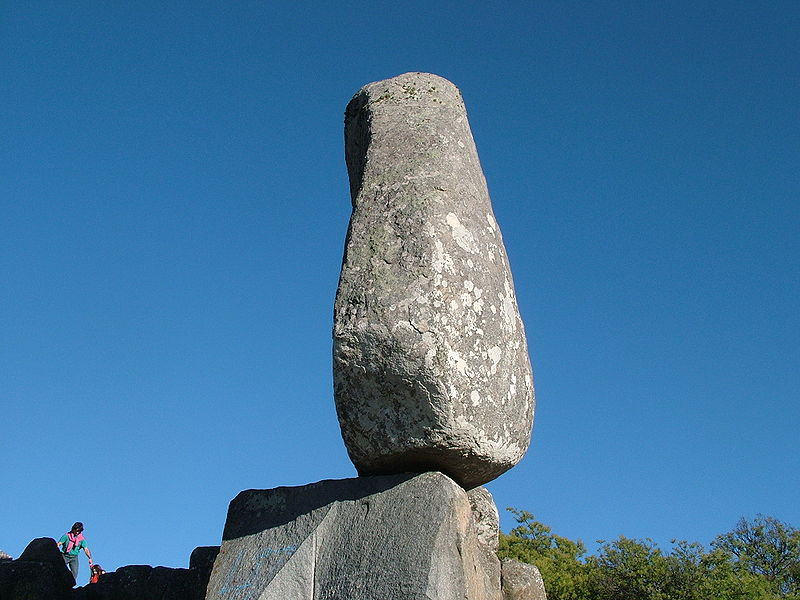
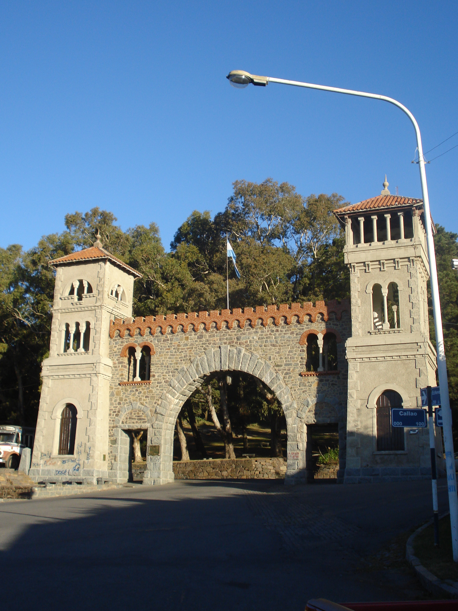

TURISMO TANDIL
CIUDAD DE TANDIL, PROVINCIA DE BUENOS AIRES. ARGENTINA
Tandil es una ciudad argentina, cabecera del partido homónimo ubicada en el centro-este de la Provincia de Buenos Aires, Argentina. Se halla sobre las sierras del sistema de Tandilia. Fue fundada por el brigadier general Martín Rodríguez, gobernador de la provincia de Buenos Aires en 1823, con el nombre de Fuerte Independencia. Su población inicial fue de 400 habitantes y debió soportar el asedio permanente de los indígenas, que trataron de impedir la consolidación del poblado.2 En los últimos años, la ciudad ha atravesado un importante crecimiento demográfico, por encima de la media argentina, y cuenta en la actualidad con alrededor de 150.000 habitantes. Es una ciudad con clima templado, con temperaturas medias de 13.4 °C, que cuenta con un núcleo urbano actual dividido en 37 barrios. En la actualidad, Tandil dejó de ser un destino turístico estacional o de Semana Santa, para pasar a ser un destino de todo el año, con un marcado fuerte en los fines de semana largos, en especial, los feriados puente. La ciudad es muy elegida tanto en estaciones intermedias, como en verano e invierno. La oferta de restaurantes, cafés, bares, fast food y cervecerías se ha visto ampliada considerablemente en los últimos años. Contando con una variada propuesta de comida regional, internacional y de distintos países y sabores. Las principales cadenas de cervecerías decidieron abrir en Tandil, dado el marcado movimiento turístico, además del gran público joven con el que cuenta la ciudad. Sin embargo, los preferidos de los turistas siguen siendo los restaurantes de picadas y comida regional.
LAGO DEL FUERTE

La represa Lago del Fuerte es un embalse artificial situado en la ciudad de Tandil, en la zona central de la provincia de Buenos Aires, en el centro-este de la Argentina. Es una atracción turística, además de un área para el esparcimiento de los tandilenses
EL CENTINELA
El cerro El Centinela, a 5 km de la ciudad de Tandil, provincia de Buenos Aires, Argentina; se eleva 298 msnm, y lleva ese nombre por la silueta rocosa que lo corona.
PARQUE INDEPENDENCIA
Se encuentra ubicado a mil metros del lugar donde se emplazó al Fuerte Independencia, tiene una altura de 280 metros sobre el nivel del mar. Su entrada es una portada de granito en estilo románico renacentista, donada en 1923, en conmemoración del centenario de la ciudad, por la colectividad italiana.
AUTOR:EMANUEL QUERO
Año 2022